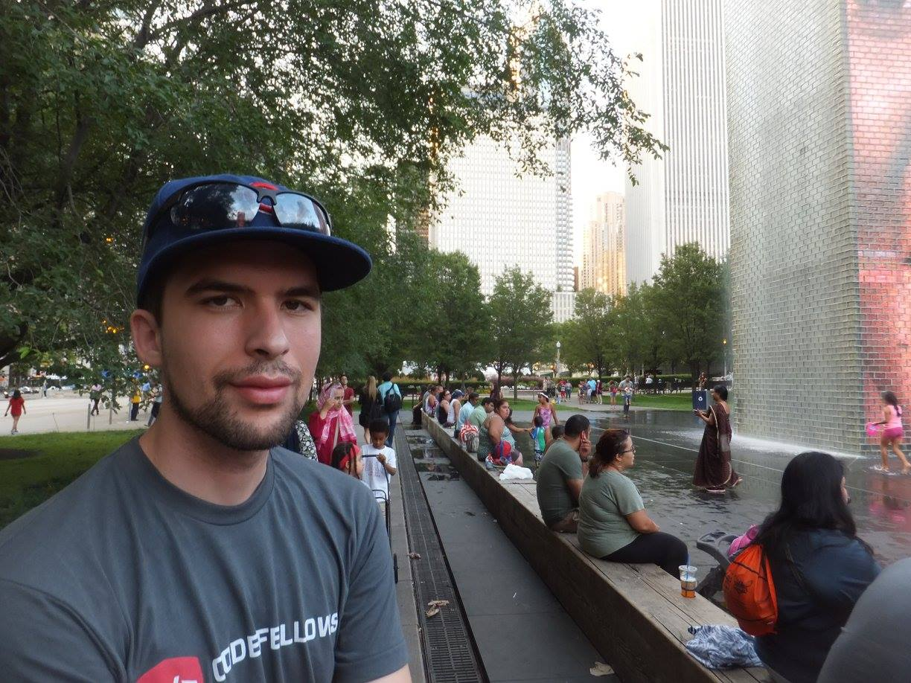

Portfolio for Sean Anderson

Sean is passionate about web development. As his body of work has demonstrated, he has engaged with HTML, CSS, and JavaScript with ample depth. He has built an about me site with a guessing game, modeled a small business operation, and created a focus group simulation in order to collect and process data. As a final project in one of his classes he helped contribute to BroNacho, a site that collects nacho preferences and then uses algorithms to compare compatability between the user and other people. Further, Sean is devoted to continually growing and reflecting on what he has learned. Please feel free to look throughout this portfolio, at the work that Sean has created.